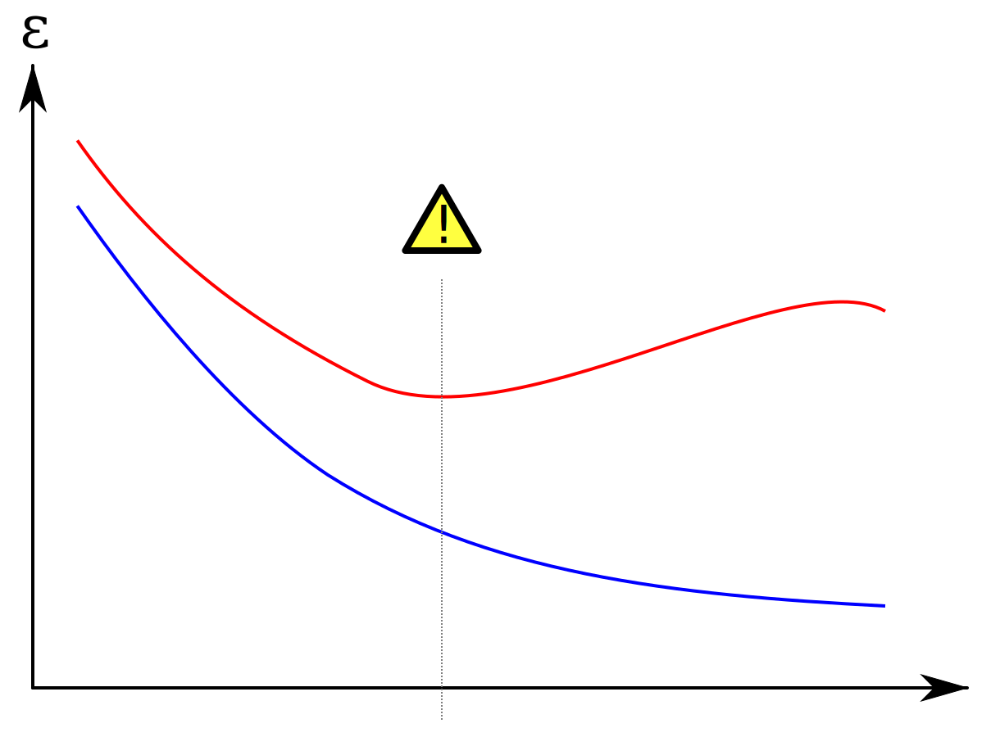

name: inverse layout: true class: center, middle, inverse --- name: cover # A Comparison of Classification Methods QING Pei <small> [edwardtoday@gmail.com](mailto:edwardtoday@gmail.com) </small> .footnote[January 16, 2013 @ PolyU BRC] --- name: agenda layout: false .left-column[ ## Agenda ] .right-column[ 1. Data Set 2. Experiment 3. Discussion 4. Future Work ] --- .left-column[ ## Agenda ## Data Set ] .right-column[ <table id="hor-minimalist-b"> <thead> <tr> <th scope="col"></th> <th scope="col" colspan="2">Hong Kong</th> <th scope="col" colspan="2">Guangzhou</th> <th scope="col">Total</th> </tr> </thead> <tbody> <tr> <td></td> <td>healthy</td> <td>diabetes</td> <td>healthy</td> <td>diabetes</td> <td></td> </tr> <tr> <td>ultrasound</td> <td>14</td> <td>257</td> <td>605</td> <td>0</td> <td>876</td> </tr> <tr> <td>photoelectric</td> <td>14</td> <td>295</td> <td>322</td> <td>0</td> <td>631</td> </tr> <tr> <td>pressure</td> <td>19</td> <td>320</td> <td>269</td> <td>0</td> <td>608</td> </tr> <tr> <td>odor</td> <td>131</td> <td>297</td> <td>310</td> <td>117</td> <td>855</td> </tr> <tr> <td>face</td> <td>0</td> <td>284</td> <td>142</td> <td>0</td> <td>426</td> </tr> <tr> <td>tongue</td> <td>0</td> <td>296</td> <td>130</td> <td>0</td> <td>426</td> </tr> </tbody> </table> ] --- .left-column[ ## Agenda ## Data Set ] .right-column[ ### Features * Ultrasound > 15 (EMD) + 14 (WAVEP) + 8 (wavelet) + 1 (ApEn) = 38 * Photo-electric > 1 (max) + 1 (max gap) + 1 (std) + 1 (Eigen value) = 4 * Pressure, 3 (period) + 6 (entropy) = 9 * Odor > 707 (geometry) + 196 (wavelet) + 28 (phase) = 931 * Face, 6 (color) * 4 (block) = 24 * Tongue > 12 (color) + 9 (texture) + 13 (geometry) + 7 (others) = 41 ] --- .left-column[ ## Agenda ## Data Set ## Experiment ] .right-column[ ### Experiment Settings * 22 algorithms * Cross-validation * 10-folds * 7 data sets - 6 independent + merged pulse features ] --- .left-column[ ## Agenda ## Data Set ## Experiment ] .right-column[ ### Tested Algorithms <table id="hor-minimalist-b"> <thead> <tr> <th scope="col">ID</th> <th scope="col">Algorithm</th> <th scope="col">ID</th> <th scope="col">Algorithm</th> </tr> </thead> <tbody> <tr> <td>1</td> <td>Simple Logistic</td> <td>12</td> <td>Ridor</td> </tr> <tr> <td>2</td> <td>SMO</td> <td>13</td> <td>ADTree</td> </tr> <tr> <td>3</td> <td>Voted Perception</td> <td>14</td> <td>FT</td> </tr> <tr> <td>4</td> <td>IBk</td> <td>15</td> <td>J48</td> </tr> <tr> <td>5</td> <td>LWL</td> <td>16</td> <td>Random Forest</td> </tr> <tr> <td>6</td> <td>AdaBoostM1</td> <td>17</td> <td>REPTree</td> </tr> <tr> <td>7</td> <td>Attribute Selected Classifier</td> <td>18</td> <td>SimpleCart</td> </tr> <tr> <td>8</td> <td>Random Committee</td> <td>19</td> <td>Bayesian Logistic Regression</td> </tr> <tr> <td>9</td> <td>Conjunctive Rule</td> <td>20</td> <td>Naive Bayes</td> </tr> <tr> <td>10</td> <td>JRip</td> <td>21</td> <td>Bayes Net</td> </tr> <tr> <td>11</td> <td>PART</td> <td>22</td> <td>LibSVM</td> </tr> </tbody> </table> ] --- .left-column[ ## Agenda ## Data Set ## Experiment ] .right-column[ ### Comparison * Accuracy - Percent Correct - False Positive Rate - False Negative Rate * Time Consumption - Training Time - Testing Time * Model Size ] --- .left-column[ ## Agenda ## Data Set ## Experiment ] .right-column[  ] --- .left-column[ ## Agenda ## Data Set ## Experiment ] .right-column[  ] --- .left-column[ ## Agenda ## Data Set ## Experiment ] .right-column[  ] --- .left-column[ ## Agenda ## Data Set ## Experiment ] .right-column[  ] --- .left-column[ ## Agenda ## Data Set ## Experiment ] .right-column[  ] --- .left-column[ ## Agenda ## Data Set ## Experiment ] .right-column[  ] --- .left-column[ ## Agenda ## Data Set ## Experiment ## Discussion ] .right-column[ ### Algorithm Matters * Different algorithms lead to different - Accuracy - Speed - Time consumption - Storage space * And the difference can be dramatic ] --- .left-column[ ## Agenda ## Data Set ## Experiment ## Discussion ] .right-column[ ### Features Are Most Important * Most important factor of classification performance is - Input feature vectors * Length makes a difference - Not too long (odor 931, over-fitting) - Not too short either (photo-electric 4, little information to make decisions) ] --- .left-column[ ## Agenda ## Data Set ## Experiment ## Discussion ] .right-column[ ### Over-fitting  ] --- .left-column[ ## Agenda ## Data Set ## Experiment ## Discussion ] .right-column[ ### Current Data Set Is Biased * Guangzhou samples are mostly healthy. * Hong Kong samples are mostly unhealthy. * Does the difference come from other uncontrolled factor? - We cannot tell with the currently available data. ] --- .left-column[ ## Agenda ## Data Set ## Experiment ## Discussion ## Future Work ] .right-column[ * Collect more unbiased samples. * Find an algorithm that works best with our type of data. - Explore why it fits so well. - Find a way to further improve the results of our specific application. ] --- name: last-page template: inverse ## Thank you. .footnote[Slideshow created using [remark](http://github.com/gnab/remark).]